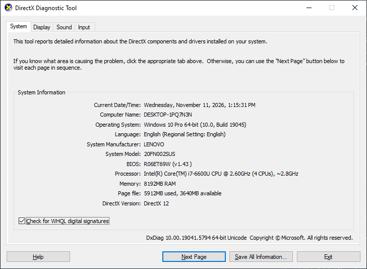

← بازگشت به داشبوردEnglish
MISSION 01 / 10 · FIELD REPORT
تصویر ۱ ـ اطلاعات کلی سیستم در DXDIAG 
تصویر ۲ ـ مشخصات نمایشگر و کارت گرافیک 
تصویر ۳ ـ خروجی دستور SYSTEMINFO 
تصویر ۴ ـ پنجره System Information
گزارش مشخصات کامل کامپیوتر
System Information — بررسی مشخصات سختافزاری و نرمافزاری با ابزارهای داخلی ویندوز
01 / هدف مأموریت
هدف این پروژه، شناسایی و ثبت مشخصات اصلی سختافزاری و نرمافزاری کامپیوتر با استفاده از سه ابزار داخلی ویندوز است.
02 / ابزار اول: DXDIAG
این ابزار اطلاعات پردازنده، حافظه، نمایشگر، کارت گرافیک، صدا و نسخه DirectX را نمایش میدهد.
- Win + R را بزن، عبارت dxdiag را وارد کن و Enter بزن.
- در تب System مشخصات کلی و در تب Display اطلاعات کارت گرافیک را بررسی کن.
- در صورت نیاز تبهای Sound و Input را هم بررسی کن.
- برای ذخیره گزارش، روی Save All Information کلیک کن.

03 / ابزار دوم: SYSTEMINFO
این دستور اطلاعاتی مانند نسخه ویندوز، مدل سیستم، پردازنده، BIOS، RAM و کارتهای شبکه را بهصورت متنی نمایش میدهد.
- با Win + R پنجره Run را باز کن، cmd را بنویس و Enter بزن.
- دستور systeminfo را اجرا کن و منتظر نمایش اطلاعات بمان.
- برای ذخیره خروجی در درایو C، دستور زیر را اجرا کن:
systeminfo > C:\systeminfo.txt04 / ابزار سوم: MSINFO32
این ابزار مشخصات سیستم را بهصورت گرافیکی و دستهبندیشده نمایش میدهد.
- Win + R را بزن، عبارت msinfo32 را وارد کن و Enter بزن.
- در بخش System Summary اطلاعات کلی مانند ویندوز، پردازنده، BIOS و RAM را ببین.
- در صورت نیاز بخشهای Hardware Resources، Components و Software Environment را بررسی کن.
- برای ذخیره گزارش، از منوی File گزینه Export را انتخاب کن.
05 / جمعبندی و یافتهها
- پردازنده (CPU): Intel(R) Core(TM) i7-6600U CPU
- حافظه RAM: 8192MB
- کارت گرافیک (GPU): Intel(R) HD Graphics 520
- نسخه سیستمعامل: Windows 10 Pro 64-bit